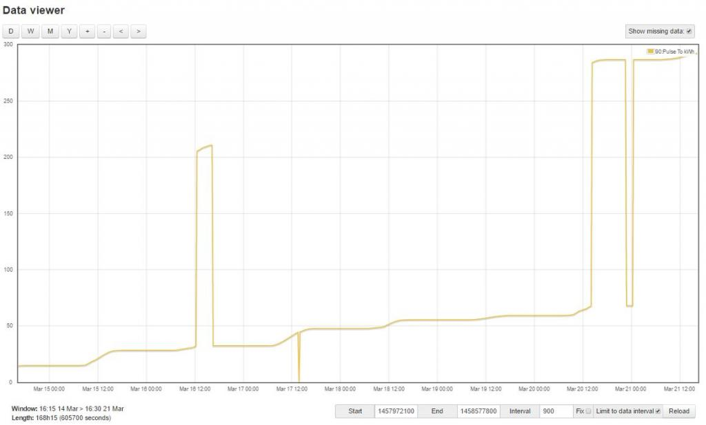
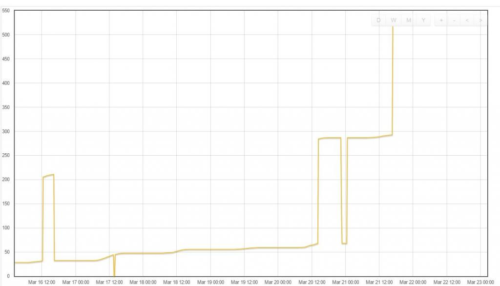
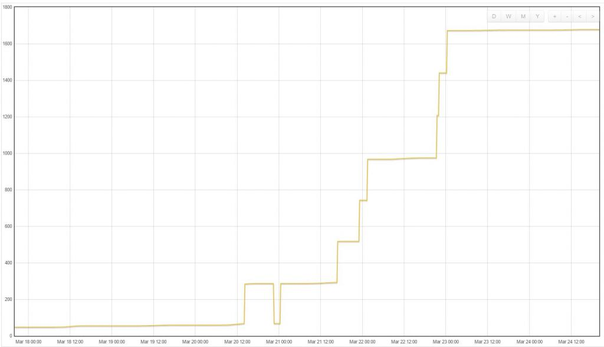
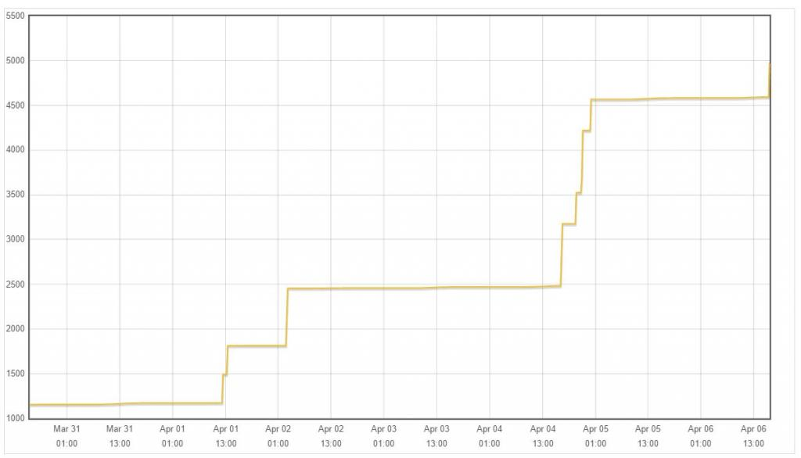
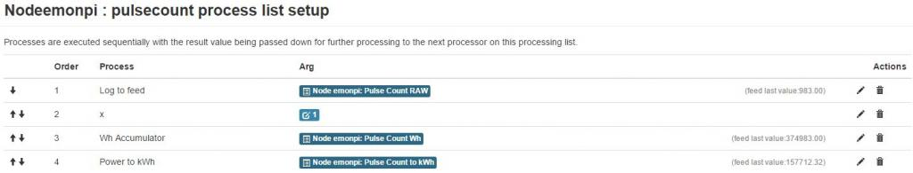
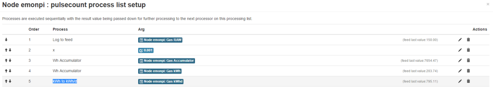

This is a Release Candidate, and may still contain bugs Please read comments in the thread below, before installing. If you require a stable release, see emonSD-17Jun15.
If you're running an earlier beta, I highly recommend switching to this version for long term support
--------------------------------------------------------------------------------------------------------------------------------------------
DOWNLOAD RC#1: emonSD-20Feb16.zip (1.3GB)
MD5 Checksum (zip): ee3ba84431aa0895bdd472829c39085b
MD5 Checksum (.img): fa7f45e19545a962055c044d8054d58e
To check the image version you are currently running, look for a file called emonSD-XXX in the /boot partition:
$ sudo ls /boot | grep emonSD
This post follows on from Steps towards an EmonCMS 9.0 SD Card Image + Upgrade path, the Low-write mode - your thoughts please thread and blog posts on node-RED & MQTT, openHAB and LightWaveRF OOK control. emonSD-22Dec15 beta, emonSD-12Feb16 Alpha
Key Features:
- Based on RASPBIAN JESSIE LITE (2015-11-21)
- Built following emonPi SD card Build Guide
- 4GB min card size download (ships on an 8GB expanded SD card)
- Emoncms V9 (RasPi emonPi install - thanks Paul Reed for writing the guide)
- Read-only root FS (see discussion thread)
- NodeRED, LightWave RF MQTT OOK control and openHAB all pre installed and configured
Please report any bugs on this thread.
Data Migration
If you're moving from our previous pre-built-SD card, and have Emoncms data you want to migrate, this can be done using the backup module. Backup module is ready installed on this image. You will need to install it on an older image:
See Emopncms backup module readme: https://github.com/emoncms/backup
Please report any issues to his thread.
Storage & Read-only File system
The image is based on Lightweight Raspbian Jessie which makes for a very space efficient stack. With everything installed (inc nodeRED & openHAB) total system size is 1.7GB compared to the previous ready-to-go emonPi image, which was over 2GB without nodeRED or openHAB.
As before, the filesystem is in read-only mode by default. discussion thread.
To put the filesystem in read/write mode, use the command: rpi-rw
To return to read-only mode, use the command: rpi-ro
df -h /dev/root 3.4G 1.8G 1.5G 56% / devtmpfs 459M 0 459M 0% /dev tmpfs 463M 0 463M 0% /dev/shm tmpfs 463M 13M 451M 3% /run tmpfs 5.0M 4.0K 5.0M 1% /run/lock tmpfs 463M 0 463M 0% /sys/fs/cgroup tmpfs 40M 6.6M 34M 17% /var/lib/openhab tmpfs 1.0M 0 1.0M 0% /var/lib/dhcp tmpfs 50M 7.9M 43M 16% /var/log tmpfs 30M 36K 30M 1% /tmp /dev/mmcblk0p1 60M 20M 41M 34% /boot /dev/mmcblk0p3 194M 32M 153M 17% /home/pi/data
The main data folder for emoncms is /home/pi/data this folder is always mounted Read/Write. A number of other folders are mounted in RAM (tmpfs), see /etc/fstab. A read-only file system presents challenges to some core Linux processes such as DHCP and NTP. A couple of DHCP & Resolv files are located in the writeable ~/data folder and symlinked to /etc and a custom /sbin/dhclient-script is used.NTP-backup (thanks Paul) is used to enable NTP clock updates in R/O mode. See the original NTP discussion thread.
emonPi
Now updates itself on first factory boot so we will always ship with latest software pulled from github. emonPi LCD now shows when it's updating and also LCD scrip has been updated to include authenticated MQTT support and to display temperature, VRMS and pulse count values as well as power 1 &2.

Emoncms V9
Access via: http://emonpi
Authenticate: Create the admin user account
Configure: emonhub.conf (located in ~/data) via web interface
Update: Pull in the latest updates from Emoncms stable branch using the web-based update tool in Administration > update emonPi.
SSH
The default SSH password has been changed from "raspberry" to "emonpi2016" since even though we recommend users change their password, not many do. Moving away from the default raspberry will give a little more security. It's still HIGHLY RECOMMENDED to change the SSH password using passwd (be sure the filesystem is in R/W mode before you change the password (rpi-rw)
MQTT
Mosquitto MQTT server is running on port 1883.
emonHub (emon-pi variant) posts emonPi data to the following topics:
emonhub/rx/<nodeID>/values topic emon/<nodename>/<keyname> (e.g. emon/emontx/power1) See here for more info an emonHub MQTT topics
Port 1883 is open by default and authentication has been turned on:
mosquitto username "emonpi"
mosquitto password "emonpimqtt2016"
to change password :
sudo nano /etc/mosquitto/mosquitto.conf
add lines
allow_anonymous false password_file /etc/mosquitto/passwd
To generate a password file, use the mosquitto_passwd tool. It will prompt for a password, then create a hashed password file.
$ sudo mosquitto_passwd -c /etc/mosquitto/passwd usernameNote if mosquitto authentication credentials are change the new credentials will also need to be updated in: ~/data/emonhub.conf /var/www/emoncms/settings.php ~/emonpi/lcd/emonPiLCD.py ~/oem_openhab/configuration/openhab.cfg in node-RED MQTT node via web flows editor
On this image the Nodes module has been depreciated in favor of the mqtt_input script. When data from a particular node is received (as long as it has a relevant entry in emonhub.conf) it will be posted to Inputs when it can be then be logged go feeds. Any data posted to the emon/# MQTT topic will be logged to feeds using tbe topic names as Input name and Key name, e.g: emon/emontx/power1 will result in an input called emontx with a key called power 1 and the value.
The mqtt input script can be stopped, started and restarted using:
sudo service mqtt_input restart
The mqtt_input scripts logs to the emoncms log which can be viewed in Admin > logger. The default log level is WARN this can be changed to INTO for a more verbose log in emoncms settings.php. The MQTT server authentication details used by the script are also set in settings.php.
NodeRED
Node-RED is installed and set up with a basic (but useful!) demo flow to subscribe to emonHub MQTT topic and send an email to alert the user when emonTH batteries are low. For email to work, you will have to enter your gmail or smtp details into the node-RED email node. See node-RED blog post. For our install and setup notes see oem_node-red repo
Access Via: http://emonpi:1880
Authentication: user "emonpi" and password "emonpi2016"
The User folder is in the R/W partition so flows can be saved via web editor without he need to change to R/W mode /home/pi/data/node-red
Set user name and password in /home/pi/node-red/settings.js. See instructions on out nodeRED github
https://github.com/openenergymonitor/oem_node-red

Note: Node-RED as setup in the image is compiled for Pi2, to use with Model B+ Node will need to be recompiled. Follow these instructions:
Check if node & npm are installed/working properly, normally you will get these results:
rpi-rw sudo apt-get remove nodered pi@emonpi:~$ node -v Segmentation fault pi@emonpi:~$ npm -v Segmentation fault
Install ARM v6 (for a RasPi model B 512MB) LTS version of node.js
wget https://nodejs.org/dist/v4.2.4/node-v4.2.4-linux-armv6l.tar.gz tar -xvf node-v4.2.4-linux-armv6l.tar.gz cd node-v4.2.4-linux-armv6l/ sudo cp -R * /usr/
Check if Node-Red is working (can take up to 40-50s on a RasPi model B 512MB)
sudo service nodered start
Re-enable the Node-Red service (maybe not nescessary, haven't tested it)
sudo systemctl daemon-reload sudo systemctl enable nodered.service
Check if Node-Red gets auto-started on boot:
sudo reboot
OpenHAB
OpenHAB is installed and setup with the basic skeleton OpenEnegyMonitor config. See openHAB blog post.
Access via: http://emonpi:8080
Authenticate: user "pi" and password "emonpi2016"
Change user name and password in /etc/openhab/configurations/users.cfg
Configure: oem.items and oem.sites and located in git repo ~/oem-opemhab and symlinked to default.items and default.sitemap in relevant folders in to /etc/openhab/configurations.
Note: Config files are symlinked to our oem_openhab git repo so we can add functionally with git updates, pulled in automatically with emonPi update. It's recommended to setup your own sitemap and files config so your changes will not be overwritten by out updates:
e.g. dave.items and dave.sitemaps then navigate to http://emonpi8081/openhab.app?sitemap=dave

LightWaveRF OOK RF Tx
Service to control lightwaveRF plugs and relays via OOK (OOK Tx module installed on emonPi) controlled via MQTT and openHAB. See LightWaveRF OOK blog post.

Timezone
The timezone can be set by running raspi-config then selecting 'Internationalisation Options':
sudo raspi-config
Caution: don't try and run the 'Expand file-system option' in raspi-config. This won't work because of the extra third partition.
Re: (Release Candidate #1 ): emonSD-20Feb16 - emonPi / emonBase (Raspberry Pi + RFM69Pi) Emoncms v9 pre-built SD card image
I need a hint. On the RC1 image the Inputs work fine and all of my old Feed data is available, but I cannot figure out how to connect my Inputs to my old Feeds. The new emoncms.conf was empty. I tried copying the old emoncms.conf file to the empty one, but that did not work. I am guessing it is different do to the change in paths names with MQTT (rx/# to emon/#). But I am not sure how to fix. Any hints would be wonderful!
Re: (Release Candidate #1 ): emonSD-20Feb16 - emonPi / emonBase (Raspberry Pi + RFM69Pi) Emoncms v9 pre-built SD card image
I think you will need to manually map your inputs to feeds due to the change of MQTT topic names. Could you post screen grab to illustrate?
Re: (Release Candidate #1 ): emonSD-20Feb16 - emonPi / emonBase (Raspberry Pi + RFM69Pi) Emoncms v9 pre-built SD card image
Glyn - Attached is two screen shots and my emoncms.conf file.
Re: (Release Candidate #1 ): emonSD-20Feb16 - emonPi / emonBase (Raspberry Pi + RFM69Pi) Emoncms v9 pre-built SD card image
Since you are updating from another recent image you should be able to use your old (imported) emoncms.conf. To avoid conflicts we start from a blank emoncms.conf after the import by default. This means people will need to re-map feeds.
To re use your emoncms.conf run:
cd ~/data mv old.emoncms.conf emoncms.confRe: (Release Candidate #1 ): emonSD-20Feb16 - emonPi / emonBase (Raspberry Pi + RFM69Pi) Emoncms v9 pre-built SD card image
Glyn - That was already done (with a sudo reboot) but it did not change anything. If I click on any spanner (wrench!) it is empty with no processes listed at the top.
EDIT: added screen shot
Re: (Release Candidate #1 ): emonSD-20Feb16 - emonPi / emonBase (Raspberry Pi + RFM69Pi) Emoncms v9 pre-built SD card image
Glyn - I just re-read your response.
How do I re-map a feed?
Re: (Release Candidate #1 ): emonSD-20Feb16 - emonPi / emonBase (Raspberry Pi + RFM69Pi) Emoncms v9 pre-built SD card image
Click the little spanner next to the input then select exisitng feed in the drop down box
Re: (Release Candidate #1 ): emonSD-20Feb16 - emonPi / emonBase (Raspberry Pi + RFM69Pi) Emoncms v9 pre-built SD card image
Glyn - I think that worked! Doh!
I was going down a different path. I found this during the Import:
And when I looked at the /home/pi/data/phpfina directory I saw all of the imported files owned by root:
Not sure if this is an issue or not...
Re: (Release Candidate #1 ): emonSD-20Feb16 - emonPi / emonBase (Raspberry Pi + RFM69Pi) Emoncms v9 pre-built SD card image
Hi Glyn, I'm now starting from scratch with the 20Feb build ... I have a couple of questions ...
First, should I, with no configuration, be able to see my inputs working automatically - and immediately ?
I can see from emonhub.log and also using the node-red debug flow that the emonhub process is feeding values into mqtt. How would I set up the inputs for the emonhub ?
Sorry to sound like a NOOB here, but I'm not sure what my expectations should be ... but I did think that the OOB experience would be more-or-less ok on a RC build?
Having tried this, I rebooted the pi, and, the inputs are showing. Perhaps there is something wrong with the start-up sequence ? A race condition somewhere ?
Second question, when I restore my backup from the June15 build, I again get to the "loading ..." page on the feeds screen after doing the log/out - log-in cycle. The configuration of the emonpi system was very simple - just a current sensor and emonglcd sending in some temperature data. Again, should I be expecting this to work "OOB" ?
All I really want to do is migrate in the historic data that I have - should I write a script to parse the data files and send the data in through the input API .... or ... should I instead try and work out why the backup/restore sequence does not seem to work?
I'm happy to have a bash at making all this a bit better as I have a pile of time on my hands at the moment - but I don't want to tread on others feet or waste my time either...
Also, proving that I don't always moan, I think what you guys have done is excellent - and have recommended the emonpi to a few of my mates :-)
Jason
Re: (Release Candidate #1 ): emonSD-20Feb16 - emonPi / emonBase (Raspberry Pi + RFM69Pi) Emoncms v9 pre-built SD card image
@jon
Thanks for letting us know about the chown error. That's really interesting since I don't experiance that, here is my import-log output. Are you running the latest version of backup module? Could you try and git pull in the ~/backup folder then retry the import to see if you still experiance error?
=== Emoncms import start ===
Mon 22 Feb 23:51:44 UTC 2016
Reading ~/backup/config.cfg....
Location of mysql database: /home/pi/data
Location of emonhub.conf: /home/pi/data
Location of emoncms.conf: /home/pi/data
Location of Emoncms: /var/www/emoncms
Backup destination: /home/pi/data
Backup source path: /home/pi/data/uploads
Starting import from /home/pi/data/uploads to /home/pi/data...
Image version: emonSD-20Feb16
new image
Backup found: emoncms-backup-2016-02-16.tar.gz starting import..
Decompressing backup..
Restore phpfina and phptimeseries data folders...
Emoncms MYSQL database import...
Import emonhub.conf > /home/pi/data/old.emohub.conf
Import emoncms.conf > /home/pi/data/old.emoncms.conf
Start with fresh config: copy NEW default emonpi.emonhub.conf:
cp /home/pi/emonhub/conf/emonpi.default.emonhub.conf /home/pi/data/emonhub.conf
OK
Restarting Services...
Mon 22 Feb 23:52:02 UTC 2016
=== Emoncms import complete! ===
--------------------------------------------------------------------------------------------------------------------
@Jason
Thanks a lot for your feedback. It's great that your testing the new image, we really appreciate your feedback. Everything seems to be working well for us (hence RC) but still need to get some more data points on testing before release.
1. Yes, you should see the emonPi input appear automatically after import and any RF nodes in range. The default nodes should have their corresponding node decoders set in emonhub.conf. You should see in the emoncms.log that the mqtt_input script has subscribed to 'emon' base topic. Ah, great so after a reboot it seems like mqtt_input script is working. I will double check any race conditions that might have effected your first boot.
2. Could you post your emoncms-import.log? and emoncms.log Copy and paste from the import window and Admin page.
Have you tried to reboot the Pi after import? It should not be needed but interested to hear if it fixes this
Re: (Release Candidate #1 ): emonSD-20Feb16 - emonPi / emonBase (Raspberry Pi + RFM69Pi) Emoncms v9 pre-built SD card image
@Glyn
So, using 20Feb image ... a long-ish story with nice news at the end :-)
1. Create a backup (with about 18 hours of data, so really small)
2. Factory reset
3. On reboot, set up new emoncms user, and login
4. Look at inputs page ...
5. Note that there are no inputs.
6. Be patient, sip some tea.
7. Inputs from emonhub appear
8. Create feeds, configure "My Electric"
9. All working :-)
10. Restore the backup from #1 above....
11. Log out and in again ...
12. Check that inputs, feeds are working :-)
13. Check that "my electric" now shows the old data too ... and :-)
14. Restore my backup from the 17Jun image with about a months worth of data
15. Log out and in again.
16. The feeds page is loaded with the "loading ..." message :-(
17. Drink a cup of coffee. Drum fingers.
18. Reboot the emon pi.
19. GOTO 16
20. My personal NMI kicks in, and I capture the logs, and reboot the emonpi.
21. Nothing is better :-(
So, there is an issue with the import of the old image's backups. I have attached the emoncms log and the import log. Nothing looks that interesting with those.
I looked at the apache logs and I can see errors in the feed_model script. If we look at line 748 ... there is a script bug as the result from the sql query is not checked before it is used ... (very naughty) Anyhow, I have added the apache logs and a SQL dump for you to look at.
BUG: feed.model: 748 - $result used without checking result from query.
Seeing this error, I remembered to go to the admin page and do an "update and check" - see the attached pdf for the changes that were needed.
I applied the changes, and HUZZAH!, the feeds are now present.
So I then re-mapped the inputs to the feeds, and I have something that seems to work.
So, I think there are a couple of things that are needed. First, the "restore" script really should force the db update to happen - or, failing that, the user should be prompted to do the update at the end of the restore. Second, there needs to be instructions for how to map the inputs to the feeds for those moving from an "old" image to the new "image".
Another idea that springs to mind is that for simply restoring historic data, perhaps we could add something to just backup and restore the data. My thinking is that on the 'restore', the user could be prompted with the feed that the data should be restored to. What do you think?
Now it is time for more coffee :-)
Re: (Release Candidate #1 ): emonSD-20Feb16 - emonPi / emonBase (Raspberry Pi + RFM69Pi) Emoncms v9 pre-built SD card image
@Glyn,
Just to take the edge off the decent news from yesterday, I now see that creating dashboards does not work. I'll try again with a fresh image just to check.
Re: (Release Candidate #1 ): emonSD-20Feb16 - emonPi / emonBase (Raspberry Pi + RFM69Pi) Emoncms v9 pre-built SD card image
Hi Jason,
Sorry to hear you had trouble imported. Thanks so much for the comprehensive set of log files. I will try and investigate this today. What image were you importing the backup from? Was the backup created with the 20Feb15 image? Or was it an older image? I will try and recreate the issue.
Re: (Release Candidate #1 ): emonSD-20Feb16 - emonPi / emonBase (Raspberry Pi + RFM69Pi) Emoncms v9 pre-built SD card image
Hi Glyn - no problem - nothing that I have not seen in the past 30 years or so of professional software development :-)
So, the backup was from the 17Jun15 image - I did say in step #14 ... ! This backup was taken by using the emoncms-export.sh script from the command line.
My guess is that the issue with the import is all to do with the SQL schema changes since last June.
I guess making smooth transition from the 17Jun15 image to a new one is all about making sure the steps are clear for everyone. Lots of changes have happened since then ... I'm happy to contribute a write up if someone could verify it ?
I'll look at the dashboard problem later this afternoon and get back to you.
Re: (Release Candidate #1 ): emonSD-20Feb16 - emonPi / emonBase (Raspberry Pi + RFM69Pi) Emoncms v9 pre-built SD card image
Hi Glyn, I took a look at the dashboard issue - in my system with no dashboards, hitting "new" would not work. Here's what I see in my safari debug console:
[Error] TypeError: dashboard.add is not a function. (In 'dashboard.add()', 'dashboard.add' is undefined)
I have attached a pdf with a screen shot from the debugger.
It turns out that this error is due to a cached version of dashboard.js - with a fresh browser, there is not a problem.
Perhaps someone with a bit more up-to-date knowledge can work out why the cached copy was being used?
Re: (Release Candidate #1 ): emonSD-20Feb16 - emonPi / emonBase (Raspberry Pi + RFM69Pi) Emoncms v9 pre-built SD card image
I did an Update emonPi Update Now today and the LCD display stops on the emonPi Build screen. If I do sudo service emonPiLCD restart after a shutdown then all works as expected.
pi@emonpi:~ $ sudo service emonPiLCD status ● emonPiLCD.service - LSB: emonPi LCD controller Loaded: loaded (/etc/init.d/emonPiLCD) Active: active (running) since Wed 2016-02-24 16:24:32 CST; 5min ago Process: 431 ExecStart=/etc/init.d/emonPiLCD start (code=exited, status=0/SUCCESS) CGroup: /system.slice/emonPiLCD.service └─453 python /usr/share/emonPiLCD/emonPiLCD.py Feb 24 16:24:32 emonpi emonPiLCD[431]: Starting system emonPiLCD daemon:. Feb 24 16:24:32 emonpi systemd[1]: Started LSB: emonPi LCD controller. pi@emonpi:~ $ sudo service emonPiLCD restart pi@emonpi:~ $ tail /var/log/emonpilcd.log ... pi@emonpi:~ $ tail /var/log/daemon.log ... pi@emonpi:~ $ sudo ls /boot | grep emonSD emonSD-20Feb16EDIT: I decided to send the log files as attachments.
Re: (Release Candidate #1 ): emonSD-20Feb16 - emonPi / emonBase (Raspberry Pi + RFM69Pi) Emoncms v9 pre-built SD card image
@jon did you update after 4pm today? This issue should now be fixed. Please update again and confirm. Thanks for letting me know.
https://github.com/openenergymonitor/emonpi/commit/424644fddebd8b8abec63...
Re: (Release Candidate #1 ): emonSD-20Feb16 - emonPi / emonBase (Raspberry Pi + RFM69Pi) Emoncms v9 pre-built SD card image
Hi,
I have decided to update a few things and finally catch up with the current branch of workings.
Unfortunately I have a but of ancient hardware however this is working fine as emonhub.log is showing the updates as I would expect and is pushing around the MQTT feeds.
The hardware I have is a Pi 1 B (2nd Gen) with the RFM12Pi (V1) - I must have been lucky as this worked solidly for 6 months or so until I upgraded to a full Debian PC and a JeeNode V6 (USB) to capture the data.
The PC is working fine now, and I am looking to try and develop a module or two for my own use on this Pi, I have hit a stumbling block.
When I am trying to create the feeds, I get the error message "ERROR: Feed could not be created, undefined". This is in the actual inputs page, after clicking on the spanner to create it.
In the emoncms.log, I get the line
2016-02-25 22:22:38.140|ERROR|feed_model.php|EngineClass() Engine id '1' is not supported.
To help troubleshoot I have gone into the settings, and commented out all of the hidden engines and tried them all.
Within mysql (I understand how to get to this) I have the following the feeds table
I think it is something to do with the engine field, but when changed to '8' (from settings.php), it makes no difference.
This is a clean image that was downloaded today (25th) and am looking just to setup as a test for now and the database is completely fresh also, as I wanted to develop with fresh data in the newer formats. (I started all this with Emoncms 3 (I think, before the dedicated Pi images were produced).
Looking forward to getting this going, and helping where I can to get this going on some of the legacy hardware out there.
Jimmy
Re: (Release Candidate #1 ): emonSD-20Feb16 - emonPi / emonBase (Raspberry Pi + RFM69Pi) Emoncms v9 pre-built SD card image
@Glyn - I did emonPi Update just now (Fri Feb 26 at 17:20 UTC) and still have the same issue. The display freezes at the emonPi Build screen and running sudo service emonPiLCD restart corrects the freeze until the next power up.
And now the switch changes the display from emonPi Build screen to the WiFi screen (as expected). The next 4 or 5 button pushes stay at the Wi-Fi screen. The next button push and I am back to emonPi Build screen. Hope this makes sense...
Re: (Release Candidate #1 ): emonSD-20Feb16 - emonPi / emonBase (Raspberry Pi + RFM69Pi) Emoncms v9 pre-built SD card image
@Glyn - Once I stop the emonhub service via sudo service emonhub stop / or restart I cannot restart emonhub. The only way I can restart emonhub is via sudo reboot. This is what I see in the emonhub log:
And I see this in the Terminal:
I added more Terminal info in the enclosed file.
Re: (Release Candidate #1 ): emonSD-20Feb16 - emonPi / emonBase (Raspberry Pi + RFM69Pi) Emoncms v9 pre-built SD card image
Jon,
To me with my limited linux skills it looks as though it cannot find, open or write to /var/log/emonhub/emonhub.log.
if you change directory to /var/log/emonhub
and then do
This will show the owner, file permissions etc of that directory, if you could feed that back I may be able to help.
Jimmy
PS, If someone can explain how to add blocks of code, I would be grateful.
Re: (Release Candidate #1 ): emonSD-20Feb16 - emonPi / emonBase (Raspberry Pi + RFM69Pi) Emoncms v9 pre-built SD card image
Thanks for letting me know. It was indeed a log file permissions issue. I have just pushed a fix. Please let me know if it works for you.
Re: (Release Candidate #1 ): emonSD-20Feb16 - emonPi / emonBase (Raspberry Pi + RFM69Pi) Emoncms v9 pre-built SD card image
The sudo service emonhub stop / start / restart works! Thank you!
Re: (Release Candidate #1 ): emonSD-20Feb16 - emonPi / emonBase (Raspberry Pi + RFM69Pi) Emoncms v9 pre-built SD card image
I had some problems upgrading, which I detailed here and just got around to trying this again.
I have upgraded from emonpi-28may2015 to this release candidate, following your directions. Here's what I did:
(Tip: I put my original emonPi SD card into a second Raspberry Pi, changed it's hostname to emonpi-old, connected it to the network and opened http://emonpi-old in a new tab on my web browser, so that I could look at my old settings, rather than trying to rely on memory.)
I entered my WIFI key, removed the ethernet cable and rebooted the emonPi again to check that everything was working OK and all seems well, except for a couple of issues:
Also, as a feature request; could you possibly put a shutdown/restart option in the admin interface?
(It'll save having to ssh into the pi to do so.)
Please let me know if you want any more information, logs, or anything else,
Rich.
Re: (Release Candidate #1 ): emonSD-20Feb16 - emonPi / emonBase (Raspberry Pi + RFM69Pi) Emoncms v9 pre-built SD card image
Hello again Ritch!
Fantastic, thanks a lot for detailing your migration experience. I'm glad to hear it was a mostly positive experience this time around.
When you say 'poke' the new dashboard to make the graphs appear, what do you mean exactly?!
Yes, it would be great to be able to restart / shutdown via Emoncms. However it would be quite a large security risk to allow the web user to run superuser shell commands. Maybe it could be an optional Emoncms module users could self install if they are feeling brave and are confident with their local firewall security setup.
Re: (Release Candidate #1 ): emonSD-20Feb16 - emonPi / emonBase (Raspberry Pi + RFM69Pi) Emoncms v9 pre-built SD card image
I actually do agree that this could be a security risk, but also could be a better end user experiance so people don't have to get putty, or use the cli at all.
This is not something I have ever tried, but if you were to change the permissions on the "shutdown command" (/bin/shutdown?) and the web link just perform a system call to this would this be doable, or just an alias?
That way the www-data user is not elevated, but it will allow the request to be built, so should help mitigate the security risk.
After all most linux based home routers allow this functionality one way or another...
Jimmy
Re: (Release Candidate #1 ): emonSD-20Feb16 - emonPi / emonBase (Raspberry Pi + RFM69Pi) Emoncms v9 pre-built SD card image
That's actually a good idea, I had not thought of that. So simple. You can see my concern of letting Web user run sudo commands!
Re: (Release Candidate #1 ): emonSD-20Feb16 - emonPi / emonBase (Raspberry Pi + RFM69Pi) Emoncms v9 pre-built SD card image
Hi,
It does not work :(
Tried on Ubuntu, but its basically the same, it looks like the /sbin/shutdown binary is hard coded to require a root user...
However the link http://askubuntu.com/questions/168879/shutdown-from-terminal-without-entering-password may be able to provide a future use that may work, but I'll leave that down to you...
Jimmy
Re: (Release Candidate #1 ): emonSD-20Feb16 - emonPi / emonBase (Raspberry Pi + RFM69Pi) Emoncms v9 pre-built SD card image
"When you say 'poke' the new dashboard to make the graphs appear, what do you mean exactly?!" - glyn.hudson
Basically, as I hope you can see from the image above, the power dials on the top three graphs were not visible, but when I clicked on the area where each dial should be, the outline of the widget appeared. Clicking Configure for each one of these showed that all three widgets were set to mains_power as their chosen feed input, although the other options remained intact. I assume that this must have had something to do with the re-mapping of inputs to the feeds, but this does not explain why this happened only with these dials and not the rest of the graphs. This behavior is reproducible, as this happened exactly the same during my earlier attempt at upgrading. On the grand scheme of things, this is not really a big deal, but it is a reproducible bug and so I thought it should be brought to your attention.
I simply changed the relevant feeds back to mains_power, solar_power and house_power respectively, then saved the dash and all was well.
Also, as you may notice; I managed to get my default dashboard to show up properly, so that it is not only accessible from the Setup menu. I did this by changing it's name and alias from Main Dash to Main-Dash. (Thanks to derek_j in this post for the solution.)
Re: (Release Candidate #1 ): emonSD-20Feb16 - emonPi / emonBase (Raspberry Pi + RFM69Pi) Emoncms v9 pre-built SD card image
"However the link http://askubuntu.com/questions/168879/shutdown-from-terminal-without-ent... may be able to provide a future use that may work, but I'll leave that down to you..." - manicmoddin
I just took a look and there's some really good ideas on there. :)
+1
Re: (Release Candidate #1 ): emonSD-20Feb16 - emonPi / emonBase (Raspberry Pi + RFM69Pi) Emoncms v9 pre-built SD card image
I've been looking forward to being able to get my emonPi to do OOK switching for ages now and with this major release, I should be able to do so soon. The trouble is, I have a big bunch of cheapo, Maplin RF sockets, which I want to control and not the LightWaveRF type supported here.
https://www.raspberrypi.org/forums/viewtopic.php?f=37&t=66946
http://web.archive.org/web/20151125162714/http://code.google.com/p/rc-sw...
I have been trawling the internet for the last couple of days and couldn't find an easy way of getting this set up, until I found myself back to the OpenHab site, where I discovered that a Raspberry Pi RC Switch Binding has been in the pipeline since last May and was added to version 1.8 in January.
My question is: Would it be possible to include this in the release and do you think it would work on your hardware?
Also, I've been in conversation with Daniel Knight over at the DietPi project about including emonCMS and some of this other stuff as options in his installer and he seems very interested.
https://www.raspberrypi.org/forums/viewtopic.php?p=914226#p914226
https://github.com/Fourdee/DietPi/issues/210
Apart from my own selfish motives, I thought that it wouldn't hurt to pimp this project and maybe get word of it to a wider audience.
[Partial duplicates of this post deleted. Please see 'Read this before posting'. Moderator (RW)]
Re: (Release Candidate #1 ): emonSD-20Feb16 - emonPi / emonBase (Raspberry Pi + RFM69Pi) Emoncms v9 pre-built SD card image
Yes RC switch binding should with with our hardware. Just select GPIO 18 to use the OOK Tx module. Installing by default may conflict with LWRF. Testing would be needed. Let me know if you get this working.
DietPi looks very cool. This is the full image build guide I created while making the emonPi image. Emoncms can be installed as a normal web app but it's frequent disk writing could cause a normal SD to fail in a few months. This is why we have put a lot of effort into RO FS and low-write optimisation. See full image build guide:
https://github.com/openenergymonitor/emonpi/blob/master/docs/SD-card-bui...
Re: (Release Candidate #1 ): emonSD-20Feb16 - emonPi / emonBase (Raspberry Pi + RFM69Pi) Emoncms v9 pre-built SD card image
One of the first questions you are asked when you first install DietPi is if you want to set up a dedicated hard drive for data storage:
http://fuzon.co.uk/phpbb/viewtopic.php?f=8&t=9#p9
"Step 5 :
On first run, DietPi will ask the following questions regarding this installation:
- Dedicated USB Harddrive Installation?
If you selected Yes, DietPi will start the USB drive setup system. Follow the onscreen instructions. This will configure your USB drive for this installation.
Using a USB Dedicated Harddrive installation will ensure all DietPi-Software options are available to you. DietPi will automatically setup all future software installations to utilize the USB Drive rather than the SD card."
So you can set up a spinning drive for this role if you want.
Re: (Release Candidate #1 ): emonSD-20Feb16 - emonPi / emonBase (Raspberry Pi + RFM69Pi) Emoncms v9 pre-built SD card image
Excellent.
I am planning a release of this image soon, I have the following on my list of tweaks to make. Can you think of anything else that needs to be fixed (that can't be fixed fix git push to emoncms / emonPi repo etc.). The unit will perform an auto update on first boot in the factory so all latest git update will be pulled in:
Re: (Release Candidate #1 ): emonSD-20Feb16 - emonPi / emonBase (Raspberry Pi + RFM69Pi) Emoncms v9 pre-built SD card image
Here is a list I had (not sure if they can be updated by git):
Re: (Release Candidate #1 ): emonSD-20Feb16 - emonPi / emonBase (Raspberry Pi + RFM69Pi) Emoncms v9 pre-built SD card image
Hi Jon, Thanks for the input.
I have not been able to replicate the exact backup issue. You are experiencing. Could you send me your backup file (via dropbox) so i can try and restore and debug this issue. What base image version are you migrating from? What is the size of the backup file? Sorry, if you have told me these details before..too much multithreading going on!
Its should be easy to update nodered since we're now using the pre-packaged version sudo apt-get update && upgrade should do the trick. I've just tested and it has indeed updated nodered. This most recent package updates will be included in the new image. It's on my list!
The emonPi LCD software has just had a big update. The hanging issue has been fixed and the code has been overhauled resulting in a much snappier page changing experience. Let me know if all is working for you now.
Re: (Release Candidate #1 ): emonSD-20Feb16 - emonPi / emonBase (Raspberry Pi + RFM69Pi) Emoncms v9 pre-built SD card image
Glyn - The Backup Import info should be in your inbox and dropbox. And I'll try the node-red update via the command sudo apt-get update && upgrade.
And the emonPi LCD upgrade did make things run much faster - no delays between screens!. Thank you Bruce! (I did see the git comment about the backlight staying on and my display does the same).
Re: (Release Candidate #1 ): emonSD-20Feb16 - emonPi / emonBase (Raspberry Pi + RFM69Pi) Emoncms v9 pre-built SD card image
I can't see your backup file in my dropbox, nor have I had a notification. Please PM me a download link
Re: (Release Candidate #1 ): emonSD-20Feb16 - emonPi / emonBase (Raspberry Pi + RFM69Pi) Emoncms v9 pre-built SD card image
Glyn - I sent a PM on the 4th. Did it make it to you?
Re: (Release Candidate #1 ): emonSD-20Feb16 - emonPi / emonBase (Raspberry Pi + RFM69Pi) Emoncms v9 pre-built SD card image
Got it! Thanks, sorry I've been busy over the weekend and today. I'll have a go at debugging this tomorrow :-)
Re: (Release Candidate #1 ): emonSD-20Feb16 - emonPi / emonBase (Raspberry Pi + RFM69Pi) Emoncms v9 pre-built SD card image
I did an emonPi update via the web interface about eight days ago and all was working fine, but I checked the screen on the emonPi a little later and it was filled with garbage (random characters - sorry, no pics; I'll take a snapshot next time). The backlight was powering off properly after it's delay, so I just left it.
I checked it again today and all seemed OK still, apart from the display still, so I ran the emonPi updater again. The screen restarted during the update, showing the correct info pages and was switchable via the front mounted button, however, the backlight was permanently on again.
I ssh'd in and tried a sudo reboot, which failed and froze the terminal. I ssh'd in again and tried a sudo poweroff, which did the same. I then tried a sudo halt, which seemed to do the same, but I was unable to ssh in again. Checking my DHCP server showed that the emonPi was down, so I looked at the unit again and saw that the screen was still showing the network (IP) info. Pressing the front button, however, failed this time (indicating that the Pi was powered down, but not the screen) so I then did a hard shutdown (I pulled the plug).
After plugging back in, all was well, apart from the fact that the backlight was now permanently on again (grr). A further sudo reboot restarted the machine, but the screen is still permanently backlit.
It seems that I'm not the only one seeing screen glitches like this, so it needs looking at, I think.
I think that my suggestion of a soft-restart and shutdown option in the web interface would definitely be good idea (possibly utilising your shutdown script in some way); especially for debugging work like this.
I would also like to suggest that the Update and check (database) screen have a Done or Go Back button at the bottom (so you don't have to click the back arrow to get back) and that the Server Information section in the admin screen have a Filesystem Info part, with percentage of free space remaining in Root and Data directories, at the minimum. Maybe it could show if you are using an external storage drive for the data.
Thanks,
Rich.
Re: (Release Candidate #1 ): emonSD-20Feb16 - emonPi / emonBase (Raspberry Pi + RFM69Pi) Emoncms v9 pre-built SD card image
Hi Ritch,
Thanks for letting us know. The backlight issue has now been fixed. Please update again today to pull in the latest fix. You should notice the LCD navigation to be more responsive now. A community member has helped me refactor the emonPi LCD python service code.
If you interested in what's going on, see commits:
https://github.com/openenergymonitor/emonpi/commits/master/lcd/emonPiLCD.py
Re: (Release Candidate #1 ): emonSD-20Feb16 - emonPi / emonBase (Raspberry Pi + RFM69Pi) Emoncms v9 pre-built SD card image
Hi Jon,
I've had a go at debugging why your backup file is not uploading..i've not been able to fix. The upload seems to fail about 98%. I am uploading over local network and the uploads is very fast to network timeout is not an issue.
The error about not being a tar.gz is incorrect, this is just the general error I set for any failure. I have now renamed this error just to be 'upload failed' to avoid confusion.
I think the issue is with php file uploader. Things I have tried:
increasing size of /tmp in tmpfs in case php is storing the file here before moving to ~/data/uploads
Double checked the php.ini settings:
Expand ~/data/uploads to ensure there is plenty of space (even though there was already).
Has anyone got any ideas what else could be causing PHP upload to fail to upload a 28Mb file while a 6Mb file uploads fine ? Here is the upload code:
https://github.com/emoncms/backup/blob/master/backup/backup_controller.p...
Obviously you could do a manul import using backup module to restore after moving the backup onto the emonPi manually, but this misses the point! Instructions for manual restore are here:
https://github.com/emoncms/backup/#manual-import-instructions
Re: (Release Candidate #1 ): emonSD-20Feb16 - emonPi / emonBase (Raspberry Pi + RFM69Pi) Emoncms v9 pre-built SD card image
Glyn - This is a guess of why the import is running out of room.
28 MB from the tar.gz file (in the /uploads folder)
87 MB from the uncompressed files (in the /imports folder)
87 MB from the files copied from the /imports folder to the /data folder
------
202 MB added to the /home/pi/data area. And this is bigger then the 194 MB allocated. This is the df -h from the first post.
Maybe delete the tar.gz should be deleted after uncompressing it. And after the import delete the /imports folder.
EDIT: Ignore the above. I just realized I never tried an import with a larger /data partition using gparted or Paul's sdpart script. Sorry.
Re: (Release Candidate #1 ): emonSD-20Feb16 - emonPi / emonBase (Raspberry Pi + RFM69Pi) Emoncms v9 pre-built SD card image
Good point, it would be a good idea to remove the compressed backup once it's been unzipped. I will add this to the import script.
However I did try to import your backup with an expanded (to 3GB!) ~/data partition with the same result. I would be interested to hear if you also experienced this same. I wish I could fix this. It's very annoying, there is something strange going on with php uploads.
Re: (Release Candidate #1 ): emonSD-20Feb16 - emonPi / emonBase (Raspberry Pi + RFM69Pi) Emoncms v9 pre-built SD card image
"Hi Ritch,
Thanks for letting us know. The backlight issue has now been fixed. Please update again today to pull in the latest fix. You should notice the LCD navigation to be more responsive now. A community member has helped me refactor the emonPi LCD python service code.
If you interested in what's going on, see commits:
https://github.com/openenergymonitor/emonpi/commits/master/lcd/emonPiLCD...
Sorry for the delay.
I haven't had the chance to check out the commits to the LCD script, though I will because I am very interested.
I applied the update as soon as I read your reply and it seemed to immediately fix my display issues. I did not try shutting down and restarting afterwards (this has previously triggered the problems I have mentioned), but great progress seems to have been made on this front. Good work!
"Good point, it would be a good idea to remove the compressed backup once it's been unzipped. I will add this to the import script.
However I did try to import your backup with an expanded (to 3GB!) ~/data partition with the same result. I would be interested to hear if you also experienced this same. I wish I could fix this. It's very annoying, there is something strange going on with php uploads. "
As I have pointed out previously; I have been having the exact same problem with the uploader and circumvented this by doing a direct transfer and triggering the update script manually. It is annoying.
I dd'd onto a 16GB card and expanded the root and data partitions to Gigabyte sizes, but as you have experienced; this makes no difference.
One suggestion I would make would be be to provide an ~8GB image as standard, with nice, big root and data partitions, already configured.
As I pointed out earlier; the new image does not fit on the 4GB SD card that originally came with my emonPi and I had to substitute it with a larger one in order to get upgraded: If the new standard is 8GB, commit to 8GB and don't make people faff around with resizing their partitions. ;)
My one bit of advice would be to make sure that the image comes in comfortably under the 8GB boundary, as otherwise, people will have the same problem that I did: Their particular card may well come in a few hundred or even tens of MB undersize. Annoying!
Thanks for all of the hard work,
Rich.
Re: (Release Candidate #1 ): emonSD-20Feb16 - emonPi / emonBase (Raspberry Pi + RFM69Pi) Emoncms v9 pre-built SD card image
Thanks everyone for great work.
I downloaded the new RC1 SD image put in on 16GB card and expanded root and data partition for my emonpi. Most of the stuff is running smoothly out of the box (Node-red is awesome!), except creating feeds on local emoncms.
Re: (Release Candidate #1 ): emonSD-20Feb16 - emonPi / emonBase (Raspberry Pi + RFM69Pi) Emoncms v9 pre-built SD card image
I took a fresh image to test the new RPi 3. After doing updates (sudo apt-get update and upgrade) the standard node red flow was gone as wel as the emoncms node. After that I did the emonpi update in the emoncms administration
When I scan for Wifi networks, check my network and type in the password, nothing happens. Wifi won't get saved and won't connect. Is this RPi 3 related?
Re: (Release Candidate #1 ): emonSD-20Feb16 - emonPi / emonBase (Raspberry Pi + RFM69Pi) Emoncms v9 pre-built SD card image
It seems the nodered update overwrote the setting to move the nodered data folder to ~/data. To set this back just
edit
sudo nano /lib/systemd/system/nodered.service
Add line to the [service] section
Environment="NODE_RED_OPTIONS=--userDir /home/pi/data/node-red"
then run
sudo systemctl daemon-reload
sudo service nodered restart
https://github.com/openenergymonitor/oem_node-red#move-user-data-partiti...
Your flows should now be restored :-)
I'm not sure how to stop this happening, might be just a one off. Node-red should not need to change this file in a normal update
Re: (Release Candidate #1 ): emonSD-20Feb16 - emonPi / emonBase (Raspberry Pi + RFM69Pi) Emoncms v9 pre-built SD card image
Yes, to make Wifi work on Rpi3 you need to:
then add to config.txt
then reboot and run
Full explanation:
https://github.com/openenergymonitor/emonpi/blob/master/docs/SD-card-bui...
I will be releasing RC2 image soon which will work out of box with Rpi3
Re: (Release Candidate #1 ): emonSD-20Feb16 - emonPi / emonBase (Raspberry Pi + RFM69Pi) Emoncms v9 pre-built SD card image
@ajsicek sorry to hear you are having so many errors. I have been unable to relocate these errors. Can an you think of any other factors which might have caused these issues? Could you try and run an emonPi update then factory reset then let me know if you still get errors?
To factory reset:
Re: (Release Candidate #1 ): emonSD-20Feb16 - emonPi / emonBase (Raspberry Pi + RFM69Pi) Emoncms v9 pre-built SD card image
Have been testing RC1 with my setup which is based on a Pi ,TXv2 and a bunch of diy temp/humidity boards. I'm having trouble getting the data from the diy nodes to report in the input menu.
I've added the node info to emonhub.conf as below.
[[27]]
nodename = FunkyLounge27
[[[rx]]]
names = battery, temperature, humidity
datacode = h
scales = 0.001,0.01,0.01
units = V,C,%
Checking the log reports the data as published :
016-03-13 21:21:51,340 DEBUG RFM2Pi 30163 NEW FRAME : OK 27 14 13 224 6 166 24 (-57)
2016-03-13 21:21:51,342 DEBUG RFM2Pi 30163 Timestamp : 1457904111.34
2016-03-13 21:21:51,342 DEBUG RFM2Pi 30163 From Node : 27
2016-03-13 21:21:51,343 DEBUG RFM2Pi 30163 Values : [3.342, 17.6, 63.1]
2016-03-13 21:21:51,343 DEBUG RFM2Pi 30163 RSSI : -57
2016-03-13 21:21:51,344 INFO RFM2Pi Publishing: emon/FunkyLounge27/battery 3.342
2016-03-13 21:21:51,349 INFO RFM2Pi Publishing: emon/FunkyLounge27/temperature 17.6
2016-03-13 21:21:51,352 INFO RFM2Pi Publishing: emon/FunkyLounge27/humidity 63.1
2016-03-13 21:21:51,353 INFO RFM2Pi Publishing: emon/FunkyLounge27/rssi -57
2016-03-13 21:21:51,355 INFO RFM2Pi Publishing: emonhub/rx/27/values 3.342,17.6,63.1
2016-03-13 21:21:51,356 INFO RFM2Pi Publishing: emonhub/rx/27/rssi -57
However in the input list all that comes through is the node name and just rssi value for this node. Any ideas?
Re: (Release Candidate #1 ): emonSD-20Feb16 - emonPi / emonBase (Raspberry Pi + RFM69Pi) Emoncms v9 pre-built SD card image
Hi Keith,
It looks from the log that all is working well. Your Funky node is being successfully decoded and posted to MQTT. All topics posted to emon/ base topic should appear in Emoncms. Can you show me the full log showing your emonTx node being decoaded? Is your emonTx appearing OK in the Inputs?
Re: (Release Candidate #1 ): emonSD-20Feb16 - emonPi / emonBase (Raspberry Pi + RFM69Pi) Emoncms v9 pre-built SD card image
Thanks for the help, a link to the log is here. Plus the Emon log if you need it.
This is the input view with just the rssi reporting.
I also tried removing node 27 from the list in the EmonHubConf. By doing so the node then appeared in the input view without the naming, this would just mean some manual naming and processing to get working.
Re: (Release Candidate #1 ): emonSD-20Feb16 - emonPi / emonBase (Raspberry Pi + RFM69Pi) Emoncms v9 pre-built SD card image
This is very strange behavior, I have tested posting the exact MQTT topic string that you are having trouble with and it seems to work fine for me. See attached. I wanted to test to see if the capital letters or decimal places were causing an issue. However this seems to be not the case.
The next step will be for you to take a look to see if the values are ACTUALLY being posted to MQTT. You can look-in directly on the MQTT topics either via connecting to the emonPi vi ssh and running:
Or using another MQTT client and entering your emonPi IP and MQTT authentication details (see above). I like using MQTT lens Chrome broswer extension.
One you are subscribed to emon/# topic you should be able to see all the MQTT traffic posted to this topic, see if you can see any entries for FunkyLounge27. You could subscribed directly to emon/FunkyLounge27/# to only view messages on this topic. Let m know if you see battery, temperature etc.
Re: (Release Candidate #1 ): emonSD-20Feb16 - emonPi / emonBase (Raspberry Pi + RFM69Pi) Emoncms v9 pre-built SD card image
Ah, that's interesting that the node appeared without the names. What exactly did you change?
Could you try using a nodeID other than 27?
Re: (Release Candidate #1 ): emonSD-20Feb16 - emonPi / emonBase (Raspberry Pi + RFM69Pi) Emoncms v9 pre-built SD card image
Thanks for the advice, I've setup MQTT Lens and was able to subscribe to the Funky data as below.
To make the data from 27 appear in the input view without the names I just removed the entry below from the EmonHub Confg.
[[27]]
nodename = FunkyLounge27
[[[rx]]]
names = battery, temperature, humidity
datacode = h
scales = 0.001,0.01,0.01
units = V,C,%
I also have a bunch of other temp/humidity nodes in the house numbered 22-30. I've not added these to the node list in EmonHub Config yet. They currently show up in the input list but seem to have been re-mapped to higher node numbers. I guess the lower numbers are reserved?
Re: (Release Candidate #1 ): emonSD-20Feb16 - emonPi / emonBase (Raspberry Pi + RFM69Pi) Emoncms v9 pre-built SD card image
Mmm all looks good. I've no idea why it's not showing up!
Using MQTT lense, could you try and publish some test values e.g. emon/test124/power99 XX.XX and see if they show up in Emoncms?
You could also try renaming your funky sensor name to remove capitals and numbers from the topic name to see if that makes a difference.
Re: (Release Candidate #1 ): emonSD-20Feb16 - emonPi / emonBase (Raspberry Pi + RFM69Pi) Emoncms v9 pre-built SD card image
Thanks a lot Glyn, it works like a charm after factory reset. I still get the error in log that a file does not exists, even if it exist, but it does not seem to have any consequences :)
Re: (Release Candidate #1 ): emonSD-20Feb16 - emonPi / emonBase (Raspberry Pi + RFM69Pi) Emoncms v9 pre-built SD card image
Hi Glyn
I think there may be a bug in the emonSD-20Feb16 image if I restart my emonpi at boot up I get a large spike on the pulse counter see image

the three spikes are all when i have reboot me emonpi I don’t recall seeing this in previous builds
Thanks Steve
Re: (Release Candidate #1 ): emonSD-20Feb16 - emonPi / emonBase (Raspberry Pi + RFM69Pi) Emoncms v9 pre-built SD card image
Does this spike happen each time you reboot?
Re: (Release Candidate #1 ): emonSD-20Feb16 - emonPi / emonBase (Raspberry Pi + RFM69Pi) Emoncms v9 pre-built SD card image
Hi Glyn
Yep looks that way I have just tested see image

Steve
Re: (Release Candidate #1 ): emonSD-20Feb16 - emonPi / emonBase (Raspberry Pi + RFM69Pi) Emoncms v9 pre-built SD card image
Hi Steve,
Sorry for the slow reply, this could be a hardware issue. I will try and investigate Just to confirm are you using a pulse counter connected to the emonPi via RJ45?
I'm a bit confused why the spike on the graph then goes down again. Are you not logging the pulse data to Emoncms with the Wh accumulator data type? This feed type should now allow the value to decrement.
Re: (Release Candidate #1 ): emonSD-20Feb16 - emonPi / emonBase (Raspberry Pi + RFM69Pi) Emoncms v9 pre-built SD card image
For those concerned, the upload issue (PHP upload failing at 20Mb) has now been fixed. Larger files can now easily be uploaded and imported into Emoncms via web interface.
Update emonPi to pull in latest changes
Re: (Release Candidate #1 ): emonSD-20Feb16 - emonPi / emonBase (Raspberry Pi + RFM69Pi) Emoncms v9 pre-built SD card image
Hi Glyn
The spike on the graph is not going down on its own. Sorry, I forgot to say I had been manually changing it back. See image with no manual edits. And yes, the pulse counter is connected directly to the emonPi via RJ45

Re: (Release Candidate #1 ): emonSD-20Feb16 - emonPi / emonBase (Raspberry Pi + RFM69Pi) Emoncms v9 pre-built SD card image
The feed is still going down (see Mar 21st 00:00). Are you logging with accumulator input process? I have setup a test and am investigating this. Thanks for your feedback
Re: (Release Candidate #1 ): emonSD-20Feb16 - emonPi / emonBase (Raspberry Pi + RFM69Pi) Emoncms v9 pre-built SD card image
Glyn - I did an emonPi Update but did not find any changed files in the /backup area. There are no errors in the emonpiupdate.log:
I tried to run git pull manually and saw "error: insufficient permission for adding an object to repository database .git/objects" for these three directories:
/home/pi/emonhub
/home/pi/usefulscripts
/home/pi/backup
Then I ran your fix: https://openenergymonitor.org/emon/node/11799#comment-39153 and all updated as expected.
Is it possible to turn back on the git pull errors found within the emonpiupdate.log?
I'll try testing the import via the web page this weekend.
Re: (Release Candidate #1 ): emonSD-20Feb16 - emonPi / emonBase (Raspberry Pi + RFM69Pi) Emoncms v9 pre-built SD card image
Glyn - Today I ran the Backup Import with a large file via the webpage. The backup file was 29 MB compressed and 95 MB uncompressed. All worked A-OK! The cleanup of the /import and /uploads directories is good - lots more room!
The only issue I ran into was the one above (https://openenergymonitor.org/emon/node/12212#comment-40613) and repairing git related permissions for these three directories:
/home/pi/emonhub
/home/pi/usefulscripts
/home/pi/backup
This was a new build of image emonSD-20Feb16 on a empty 8 GB SD Card. I ran sdpart_imagefile and after the emonPi updates I had to run the git permissions fix. Then the emonPi update ran as expected.
Re: (Release Candidate #1 ): emonSD-20Feb16 - emonPi / emonBase (Raspberry Pi + RFM69Pi) Emoncms v9 pre-built SD card image
Great! Good to hear. Thanks for testing.
I wish I could get to the button of the git permissions errors. I'm still not quite sure what's triggering it. I struggle to reliably recreate the issue. The git permissions errors seem to appear randomly!
Re: (Release Candidate #1 ): emonSD-20Feb16 - emonPi / emonBase (Raspberry Pi + RFM69Pi) Emoncms v9 pre-built SD card image
Can the emonpiupdate log capture the git permission errors? Right now the only way I know there is an error is if the "Already up-to-date" is missing after the git pull command.
Re: (Release Candidate #1 ): emonSD-20Feb16 - emonPi / emonBase (Raspberry Pi + RFM69Pi) Emoncms v9 pre-built SD card image
Hi Glyn
Did you have any luck looking in to the spike problem i have been having


Thanks Steve
Re: (Release Candidate #1 ): emonSD-20Feb16 - emonPi / emonBase (Raspberry Pi + RFM69Pi) Emoncms v9 pre-built SD card image
Hi Glyn
I'm now not sure this is a hardware problem as it is also happening on the pulse input on my emonTH for my water meter could this be a problem at boot time in emoncms?
Steve
Re: (Release Candidate #1 ): emonSD-20Feb16 - emonPi / emonBase (Raspberry Pi + RFM69Pi) Emoncms v9 pre-built SD card image
Hi Steve,
I have not been able to replicate your pulse issue. Are you using our optical pulse counter with the emonPi? Same with the emonTH pulse, see below for output of my emonTH with an optical pulse connected:
I noticed an error with your input processing. The final input process 'power to kwh' is designed for converting power data to kwh, this will not work with pulse data. You should use the wh accumulator as you have correctly above. If you want a Kwh accumulation, just apply a x 0.001 scaler then log to wh accumulator again. That will be Kwh. See attached
Re: (Release Candidate #1 ): emonSD-20Feb16 - emonPi / emonBase (Raspberry Pi + RFM69Pi) Emoncms v9 pre-built SD card image
Hi Glyn
I have been doing some playing and I think I have most of it working now It was the kWh to power causing the problem I just have one last part I cant getting working how do I covert the Wh Accumulator To kWh/d this is the setup i have now but the kWh to kWh/d is causing the same problem
Thanks Steve

Re: (Release Candidate #1 ): emonSD-20Feb16 - emonPi / emonBase (Raspberry Pi + RFM69Pi) Emoncms v9 pre-built SD card image
Wh accumulator can be converted to Kwh bar graph data using bar graph vis see half way down
https://openenergymonitor.org/emon/opticalpulsesensor